Double Commander 可以把压缩文件当作普通文件夹来浏览和操作。
例如，在面板中选中一个 ZIP 文件，按 Enter 后面板会像切换文件夹一样显示该 ZIP 的内容。
Double Commander 足够灵活，可以通过自身界面调用外部程序来处理压缩文件。它采用两种不同的方式：
当尝试打开压缩包时，Double Commander 会首先检查可用的打包插件列表。
进入压缩包“内部”后，可以进行查看、复制到另一侧面板等基本操作（功能有所限制）。
下面的示例显示我们选中压缩文件 “help.rar”，按 Enter 后就像进入了文件夹：
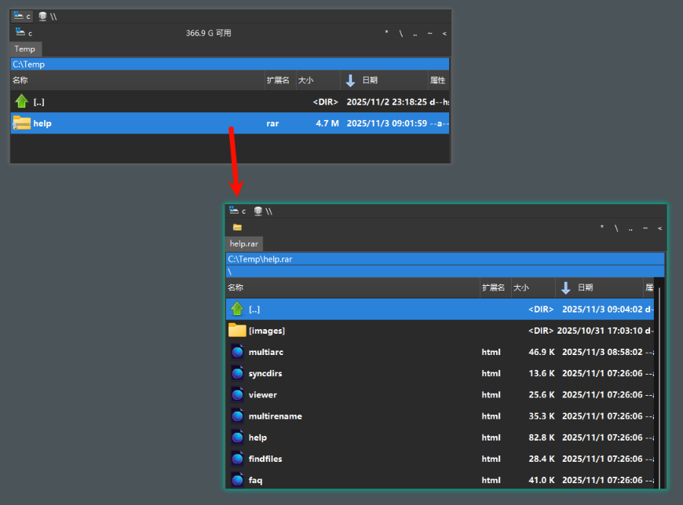
调用查看（F3）或编辑（F4）命令时，Double Commander 会将光标所在的文件解压到系统临时文件夹并打开它。关闭查看器后，临时文件会被删除。如果在编辑器中修改了该临时文件，Double Commander 会在支持此功能的格式/插件或外部解压器下提示是否重新打包回压缩包中。
双击或按 Enter 时，Double Commander 会显示被打包文件的属性窗口：
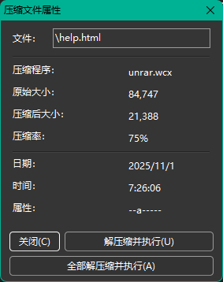
压缩程序 一栏显示使用的打包插件名称或外部压缩工具的名称。
按钮说明：
关闭 – 关闭属性窗口。
解压缩并执行 – 将光标所在文件解压到系统临时文件夹并用内部或系统关联的默认程序打开（参见 配置）。
全部解压缩并执行 – 与上一项类似，但会先解压压缩包的全部内容再执行。
可以通过 <AutoExtractOpenMask> 配置自动在关联程序中打开文件。
关闭时，Double Commander 会删除所有临时文件。
可以配置 Double Commander 使用外部的 “压缩程序插件” 来帮助处理压缩压缩包。
安装后，Double Commander 已包含了部分 .WCX 插件。
网络上还有更多此类插件可供下载，搜索 .WCX 插件即可找到。
请注意，为 Total Commander 编写的插件通常也能在 Double Commander 中使用。
要安装、启用或配置这些插件，请进入 配置 > 选项... > 插件 > 插件 WCX：
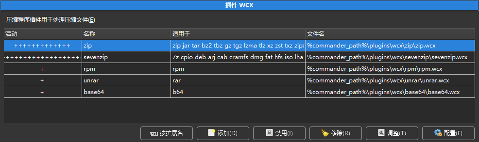
注意：某些格式为只读，仅支持查看、解包与测试。
有时所需的压缩包格式没有对应插件。
或者我们希望直接使用熟悉的外部压缩程序，以利用其插件可能不支持的功能。
Double Commander 对外部压缩程序的支持方式类似于 Total Commander 的 MultiArc 插件。
简而言之：使用外部压缩程序就是让 Double Commander 调用你熟悉的压缩/解压工具，并通过命令行参数将其“集成”到应用中。
本页接下来的部分将简介如何配置 Double Commander 来调用外部压缩程序完成各种操作。
例如，假设我们要使用 "Rar.exe" 来处理 .rar 文件。
需要配置的基本操作包括：
这些都可以在 配置 > 选项... > 压缩文件 中进行配置，如下图所示：
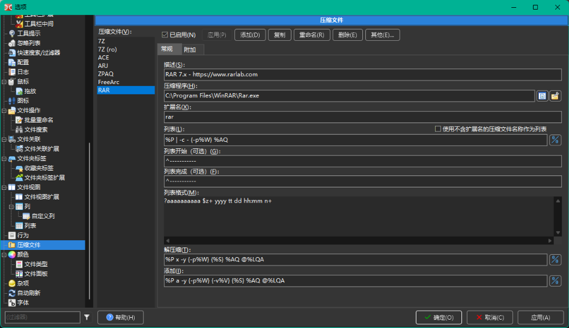
所有设置保存在 multiarc.ini 文件中。
下面章节将展示如何灵活地将外部压缩程序集成到 Double Commander 中。
点击下方的 “添加” 按钮，为压缩程序在列表中命名，然后开始配置。
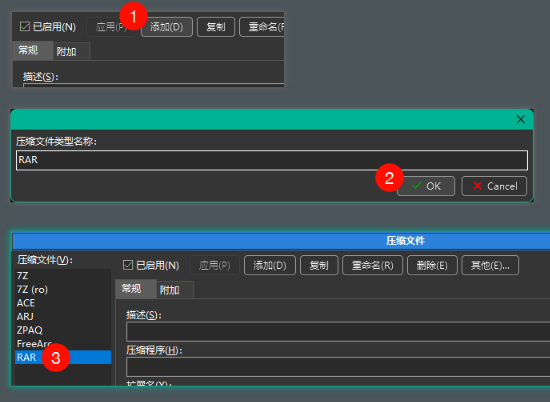
填写压缩程序说明、可执行文件路径，以及与其关联的扩展名（不带点）。
若有多个扩展名，请用单个逗号分隔，勿加空格。
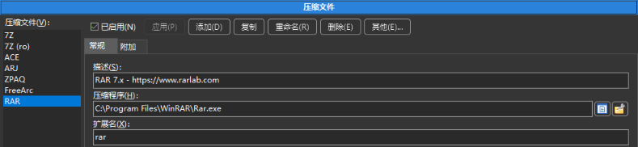
注意：Double Commander 支持双重扩展（如 "tar.gz"、"tar.xz"），双扩展应放在扩展列表前端（例如 "tar.gz" 放在 "gz" 前）。
如前所述，需要配置如何调用外部压缩程序以完成所需操作。
为此，Double Commander 提供了若干变量，用于在命令字符串中进行替换。
下表列出可用变量及其含义：
| 命令定义 | |
|---|---|
| 变量表达式 | 含义 |
%P | 打包程序的完整名称（如在“压缩文件”项中配置） |
%p | 打包程序的短名称（如在“压缩文件”项中配置） |
%A | 压缩包的完整名称 |
%a | 压缩包的短名称 |
%L | 文件列表名。该文件包含要由外部压缩程序处理的文件名（长文件名）。 |
%l | 使用短文件名的文件列表 |
%F | 单个要处理的文件名。如果压缩程序不支持命令行文件列表，则会为每个文件多次调用压缩程序。 |
%V | 分卷大小（用于多卷压缩） |
%W | 密码 |
%E<errorlevel> | 可接受的最大命令返回码。例如 %E2 表示返回码 0、1、2 均视为成功。可在命令中任意位置使用；若省略，则仅返回码 0 视为成功。 |
%O<modifier> | 默认情况下，Double Commander 会将压缩程序输出从 OEM 编码转换为 UTF-8。使用此变量可覆盖编码（见下文编码修饰符）。仅可用于“列出”动作。 |
%R | 压缩内的目标子文件夹 |
{} | 若某变量用大括号包裹，则仅在变量非空时添加到命令中 |
%S | 指定在文件打包对话框中可添加的额外命令行参数的位置（参见 压缩文件）。 |
后面会通过示例进一步说明这些变量的用法。
这些修饰符可直接紧跟在变量后使用（不留空格）。
| 变量修饰符 | |
|---|---|
| 修饰符字母 | 含义 |
F | 在文件列表中仅包含文件（可与 %L 和 %l 一起使用） |
Q | 对包含空格的名称加引号 |
q | 对所有名称加引号 |
W | 仅使用名称，不带路径 |
P | 仅使用路径，不带名称 |
A | 使用 Windows 的 ANSI 系统编码或类 Unix 系统的默认系统编码（在多数 GNU/Linux 发行版中通常为 UTF-8）；可用于 %L 和 %O |
U | 使用 UTF-8 编码；可用于 %L 和 %O |
示例将在后文展示，便于理解这些修饰符的实际用法。
若希望将压缩包当作文件夹浏览，就需要能够获取压缩包内的文件列表。
这并不需要解压，只需让外部程序输出其内容列表，Double Commander 解析后显示即可。
以 "Rar.exe" 为例，其文档说明使用 "v" 命令可输出压缩包内的文件列表：

因此，要获取 RAR 中的文件列表，需要调用类似 "Rar.exe v <archive>" 的命令。
可先在终端手动测试，例如显示 "C:\Temp\help.rar" 的内容：
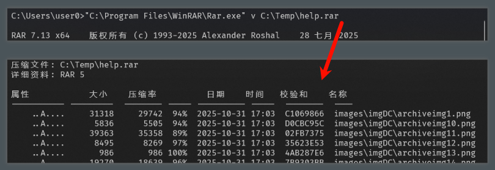
接着在 Double Commander 的配置中设置 “列表” 命令，告诉程序如何调用 "Rar.exe"。
使用之前简介的变量和修饰符来构建命令，例如：
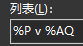
此处写了 %P v %AQ（%P 为可执行程序的路径，v 为 Rar 的查看命令，%A 为压缩包文件名，Q 表示必要时加引号）。
该配置用于内部命令 cm_OpenArchive。
关于 “使用不含扩展名的压缩文件名作为列表” 选项：适用于仅包含单个文件且压缩文件名等于去掉扩展名后的文件名的格式（如 Bzip2、XZ），因为这些压缩文件通常不包含原始文件名。
到目前为止，我们已让外部解压缩程序输出了压缩包内的列表。
接下来需要将这些输出数据获取并在面板中显示。
因此，Double Commander 需要解析解压缩程序的输出表格，将其转换为文件名、大小、日期等字段。
如上图所示，"Rar.exe" 输出的内容并不是只有纯粹的文件列表。
输出中包含一些不需要的文字，我们需要将这些干扰信息去掉，只保留实际的文件条目。
为此，可以配置一个“起始/结束标记”（魔法字符串），Double Commander 会在检测到起始标记后开始解析后续的行。
同样也可以设置结束标记，用于停止解析。
例如，如果文件列表前后都有一行虚线，就可以直接用这些虚线作为开始和结束标记：
如果外部解压缩程序直接输出纯粹的列表而没有额外行，则可以将这两个字段留空。
前导符号 ^ 表示该魔法字符串必须位于行首才能匹配；否则该字符串可以出现在行中的任意位置。
例如，如果外部解压缩程序在每行前都加上日期/时间，然后才是固定字符串，那么在配置时可把魔法字符串设为该固定字符串，但不要加 ^，以允许它出现在行中间。
如果“列表完成” 字符串可能与某个文件名相混淆，就可能过早地终止解析，因此尽量指定该字符串必须位于行首。
另外，若能把“列表完成” 配置为尽可能长且唯一的常量字符串，会更可靠，能降低误判的概率。
到此为止，Double Commander 已知道要解析哪部分输出以获取压缩包内的文件列表。
虽然可以在程序里为特定格式（例如 RAR）硬编码解析规则，但 Double Commander 选择更灵活的方式：让用户配置解析表格的规则。
这会比“零配置”略复杂，但带来更大的灵活性，可以支持程序开发者未预见到的外部解压缩程序输出格式。
为此，解析规则使用一组字母表达式来表示不同字段的位置和含义，后面各节将详述这些表达式。
下表列出了用于解析外部解压缩程序输出的“标准语法”。
正如后面的示例所示，标准语法主要基于直接替换，通常比下文简介的“高级语法”解析速度更快。能用标准语法时尽量优先使用。
| 标准语法解析 | |
|---|---|
| 表达式 | 含义 |
n | 文件名 |
z | 解压后大小 |
c | 文件描述 |
p | 压缩后大小 |
d | 日（day） |
t | 月（month） |
TTT | 三字母的月份缩写（Jan, Feb, Mar ...） |
y | 年 |
h | 小时 |
H | 小时修饰字母（a = 上午, p = 下午） |
m | 分钟 |
s | 秒 |
a | 属性（attributes） |
e | 扩展名 |
? | 跳过一个字符 |
* | 跳过直到第一个空格或行尾 |
+ | 对于行尾的名称字段：使用直到行尾的所有字符 |
如果解压缩程序每个文件的信息占用多行，则必须在配置中指定解析行数（Double Commander 支持最多 50 行）。
使用前表中定义的表达式，可以构造一个“列表格式” 字符串，使 Double Commander 能从外部解压缩程序的输出中提取文件夹、文件名、大小、日期等信息。
一个实用的方法是先手工把某一文件在解压缩程序输出中的一行复制到记事本，然后在该行下方写出与之对应的表达式，直至找到匹配的模式。
例如：
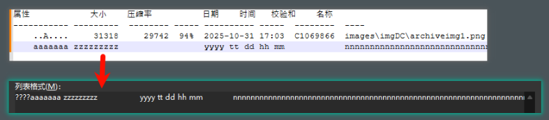
如图所示，我们在输出的相应位置写下了表示各字段的字母表达式：
a 表示文件属性的位置；z 表示解压后文件大小的位置；n 表示实际文件名所在的位置。还需把行首的 4 个空格用 ????（跳过 4 个字符）表示，从而对齐解析模板。
配置好后，在面板中选中压缩包并按 Enter 进入时，文件内容会按配置被正确解析并显示（示例中有一个文件可能显示不完全，但大多情况可正确工作）：

下表简介了解析列表时可用的“高级语法”。这些表达式比标准语法更灵活，但解析速度较慢，只有在标准语法无法满足时才使用。
后续示例会演示高级语法的用法。
| 高级语法解析 | |
|---|---|
| 表达式 | 含义 |
+ | 用于非行尾的名称字段：取直到下一个空格的所有字符 |
+ | 用于数字字段：取直到第一个非数字字符的所有数字 |
n+ | 对文件名：取直到行尾的所有字符 |
z+ | 对解压后大小：取直到第一个非数字字符的所有数字 |
p+ | 对压缩后大小：取直到第一个非数字字符的所有数字 |
$ | 跳过所有空格/制表符直到下一个字符或行尾 |
\ | 数据延续到下一行（最多支持 2 行） |
x | 精确 1 个空格；若该位置不是空格，则忽略整行 |
z=1024 | 将解压后大小乘以指定值（例如 1024） |
p=1024 | 将压缩后大小乘以指定值（例如 1024） |
标准语法在许多情况下表现良好，但并非万能。在某些情况下（例如文件名或大小字段宽度不固定时），标准语法可能会失败。
例如对大文件（如 F1.....mkv），文件大小字段可能超出预期宽度，导致解析错位：
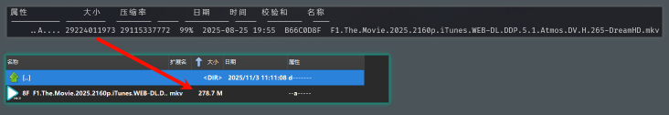
在此类情况下，可使用高级语法的更精确规则来修正解析。
例如可以使用如下更复杂的 Listing format：
虽然语法更复杂，但按块划分并结合高级表达式后能更稳健地处理宽度变化的字段。
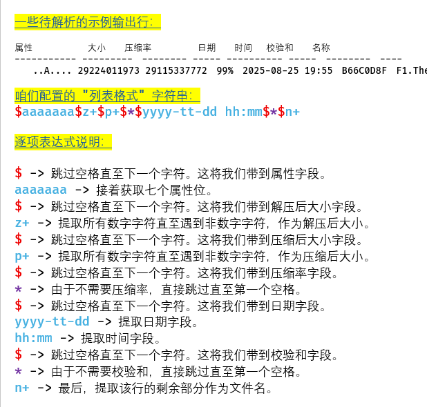
用这个格式再次测试后，即使针对非常大的文件，也能得到正确的解析结果：
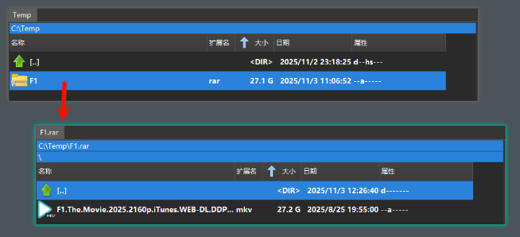
使用前述的 变量 和 变量修饰符，可以构造调用外部解压缩工具以执行“解压”操作的命令行。
以 "Rar.exe" 为例，其文档说明使用命令 x 来解压一个文件或一组文件。
Rar.exe 支持通过参数传入一个要解压的文件列表。
因此我们可以使用 %L 变量，Double Commander 会把所选文件名写入一个文本列表文件，并把该列表文件名作为参数传递给外部解压缩程序。
例如本示例中我们配置的解压命令如下：
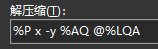
该示例的说明：
当我们选择压缩包执行“解压”或在压缩包内部查看文件（例如按 F3）时，Double Commander 会在后台用该模式把文件解压到系统临时文件夹并打开查看器。
此命令会在内部命令 cm_ExtractFiles 被调用时使用。
同样地，使用 变量 和 变量修饰符 可以构造将文件添加到压缩包的命令行。
对于 "Rar.exe"，创建或添加到压缩包的命令为 a，并可接收一个文件列表参数。
我们仍然使用 %L，让 Double Commander 把要打包的文件写入一个列表文件，并把该文件传给外部解压缩程序。
示例配置如下：
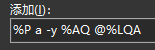
示例说明：
当使用内部命令 cm_PackFiles 打包时，会调用此配置。
某些压缩格式支持直接在压缩包内删除条目。若支持此功能，可在配置中指定外部解压缩程序的删除命令。
典型用例是在进入压缩包后选中某个文件并执行删除操作。
此项位于外部解压缩程序配置的第二个选项卡中。
以 "Rar.exe" 为例，可按下图配置删除命令：
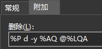
示例说明：
部分解压缩程序提供校验压缩包完整性的功能，可用来检测文件是否损坏。如果可用，可在此处配置相应的命令。
以 "Rar.exe" 为例，测试命令通常为 t：
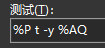
示例说明：
此配置在内部命令 cm_TestArchive 被调用时使用。如果没有错误，测试窗口会关闭；若有错误，会弹出类似下图的错误信息。
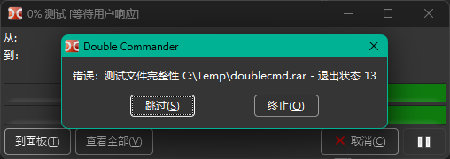
默认情况下，使用内部命令 cm_ExtractFiles 解压时，会恢复压缩包内的文件夹结构并在目标位置重建这些子文件夹。
如果解压缩程序支持，某些场景下我们希望把所有文件解压到同一文件夹而不重建文件夹结构，此时可配置“Extract without path”动作。
以 "Rar.exe" 为例，相关命令示例如下：
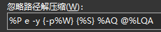
示例说明：
在 解压缩文件弹窗 中可以看到是否选择了“保留路径名”或不保留路径名等选项：
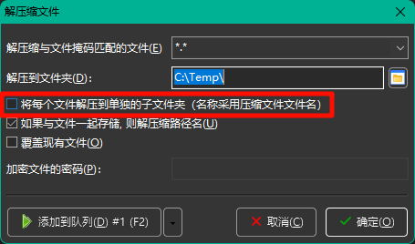
部分解压缩程序能生成“自解压”可执行文件。最终结果是一个可执行文件，运行它即可解压内部内容，适合需要在目标机器上无需额外软件即可解压的场景。
通常此动作与“添加”动作类似，只需额外加入表示生成自解压文件的参数。
以 "Rar.exe" 为例，可添加 -sfx 参数来生成自解压文件，示例如下：
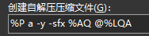
示例说明：
创建自解压压缩包的流程与普通打包相同（使用内部命令 cm_PackFiles），在弹出的对话框中勾选“Create self extracting archive”即可。
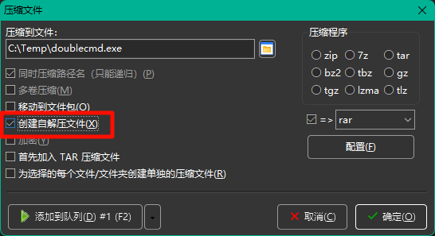
可以配置 Double Commander 忽略文件扩展名，而根据文件内部内容识别压缩包文件类型，然后调用相应的列出/解包命令。
这正是内部命令 cm_OpenArchive 使用的机制。
例如要查看自解压的 .exe 文件的内容，而不直接运行它，或查看扩展名并非典型压缩包但实际上为 ZIP 的 .docx 文件的内容时，都可以用此功能。
我们通过在文件特定位置查找“签名模式”（ID）来识别压缩包文件类型。
本节称这些模式为“ID”，并说明如何配置它们。
相关设置有三项：ID、ID Position 和 ID Seek Range。
我们需要告诉 Double Commander 在文件的哪个位置搜索特定的 ID 模式，以便识别该类型的压缩包并使用对应的命令。
举例：下面显示了 7-Zip 文件开头的十六进制片段：
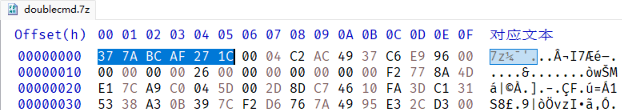
观察多个 7-Zip 文件可以发现其前六个字节总为序列 0x37 0x7A 0xBC 0xAF 0x27 0x1C。
因此我们可以配置 Double Commander：当文件在偏移 0 处以该字节序列开头时，判定为 7-Zip 压缩包并使用事先配置的命令进行处理。
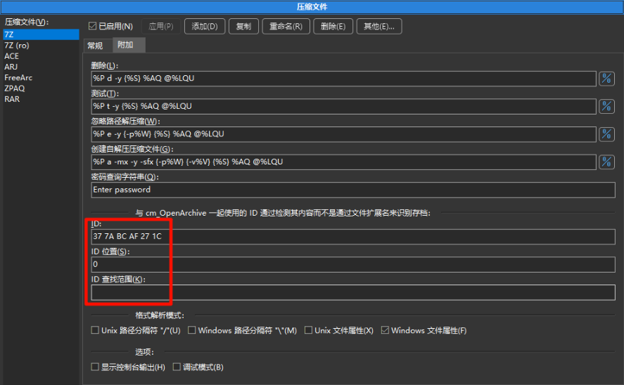
ID 必须以用空格分隔的两位十六进制数表示。
ID Position（可选）指定 ID 在文件中的位置；若留空则默认从文件开头搜索。可以用 "-" 指定从文件末尾计算的位置。
特殊值 <SeekID> 表示若按数值位置未找到，则在范围内进行搜索；搜索范围为 0 .. 文件大小 或 0 .. ID Seek Range。数值可用十进制或十六进制表示（例如 12345 或 0x3039）。负值用 0xFFFFFFFF 表示（即 -1）。
ID Seek Range（可选）是在使用 <SeekID> 时搜索的字节范围，默认值为 1 MB。
注意：上述参数可以指定多个值，用逗号分隔。
在 7-Zip 示例中，指定 ID 及 ID Position（0）通常已足够。
当调用 cm_OpenArchive 时，Double Commander 会扫描文件内容并在偏移 0 处识别到 0x37 0x7A 0xBC 0xAF 0x27 0x1C，从而把该文件当作 7z 处理并使用相关配置的列出/解压命令。
通常无需手工查看十六进制表示：文件签名可从格式规范或已有的签名库与工具中获得（例如 此 Wikipedia 页面 或 FreeDesktop.org MIME 数据库）。
上述步骤通常足以配置外部解压缩程序，但如果出现问题，还有一些调试选项可以帮助诊断：
显示控制台输出 — 若启用，Double Commander 会在日志窗口逐行显示外部解压缩程序的输出。
调试模式 — 与前者类似，但还会把输出写入 Double Commander 的调试消息（参见 --debug-log 的说明）。在此模式下，包含文件列表的临时文件（例如 %L）不会在操作完成后自动删除，便于问题分析。
如果在 配置 中禁用了日志窗口显示，启用上述选项时会强制显示日志窗口，程序退出后再隐藏；这些消息不会保存到日志文件中。
此菜单包含若干附加功能：
自动配置 — Double Commander 会检查已配置的解压缩程序可执行文件是否存在：若找到则自动填入完整路径并启用该解压缩程序，否则将其禁用。
放弃修改 — 放弃所有未保存的设置更改并恢复上次保存的状态。
压缩文件排序 — 按字母顺序排序解压缩程序列表。
全部禁用 和 全部启用 — 禁用或启用列表中的所有解压缩程序。
导出... 和 导入... — 导出或导入解压缩程序设置（全部或部分）。
默认情况下，WCX 插件或外部解压缩程序中指定的扩展名会被当作文件夹打开。若要在关联程序中打开这些文件，可以在文件的 上下文菜单 中使用“打开”项（此方式仅使用系统文件关联），或者将所需动作添加到“动作”菜单中。
若希望使用 Enter 键或双击来打开关联程序，需要调整设置。
一种办法是从压缩文件配置中移除该扩展名，但这样会导致 cm_OpenArchive 和 cm_ExtractFiles 等命令失效。另一种更灵活的方式：
如果使用 WCX 插件，可在 插件 WCX - 调整 中选择扩展名并启用 “显示为普通文件（隐藏压缩程序图标）” 标志。
如果使用外部解压缩程序，可配置 ID 识别而不指定文件扩展名。
对这类文件，Double Commander 会使用其关联的图标而不是通用的压缩包文件图标。